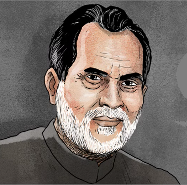

Chandra Shekhar Singh Solanki was an Indian Politician who served as the 8th Prime Minister of India, between 10 November 1990 to 21 Junne 1991. He headed a minority government of a breakaway faction of the Janata Dal with outside support from the Indian National Congress. He was the first Indian Prime Minister who had never held any Government office.
Chandra Shekhar Singh Solanki was born on 17 April 1927 in a Rajput family at Ibrahimpatti, a village in Uttar Pradesh. He came from a farming family. He was awarded a Bachelor of Arts degree at Satish Chandra P.G. College. He attended Allahabad University, obtaining his master's degree in Political Science in 1950. He was known as a firebrand in student politics and started his political career with Dr.Ram Manohar Lohia. After completing his graduation, he became active in socialist politics.
He joined the Socialist Movement and was elected Secretary of the district Praja Socialist Party, Ballia.
Within a year, he was elected joint secretary of the PSP's State unit in Uttar Pradesh. He came under the spell of Acharya Narendra Dev, a fiery Socialist leader at the beginning of his political career. Shekhar was a member of Rajya Sabha, he resigned from Rajya Sabha on 2 March 1977 after he had been elected to Lok Sabha (Lower House) from Ballia. When the emergency was declared, even though he was a Congress Party politician, he was arrested and sent to Patiala Jail.
He went on a nationwide "Padayatra" in 1983 to know the country better, which he claimed gave jitters to Prime Minister Indira Gandhi. He was called a "Young Turk"
read more.
